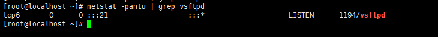

基本操作¶
命令汇总
who
who¶
who命令可以用来查看当前在线用户的情况

每个字段的意义分别是：
- 登陆的用户名
- 使用的设备终端
- 登陆系统的时间
在linux中我们的终端设备有：
pts设备终端
tty设备终端
- tty1~tty6：表示文字界面，在shell下敲
ctrl+alt+[F1-F6]即可进入对应的文字界面 - tty7：表示图像界面，在shell下敲
ctrl+alt+F7即可进入图形界面
- tty1~tty6：表示文字界面，在shell下敲
ps¶
ps命令是用来查看整个系统内部运行进程的相关信息
$ps -a # 列出当前登录终端的进程信息
$ps -au # 列出当前登录终端以及对应用户的信息
$ps -aux # 列出当前没有对应终端的进程信息，没有终端就意味着不能和用户进行交互
# ps命令的显示结果一般都很杂乱，不容易找到我们需要的信息，所以ps命令一般通过管道和grep一起使用
$ps -aux | grep -e "^root.*httpd$" # 查找进程属主为root，进程名为httpd的进程相关信息
kill¶
kill命令是通过发送信号来杀死运行进程的
$kill -l # 查看当前系统下可以使用的信号
$kill -SIGKILL 5179 # 使用SIGKILL信号杀死进程号为5179的进程
$kill -9 4968 # 使用SIGKILL信号杀死进程号为4968的进程，-9对应SIGKILL信号
env¶
env命令是用来查看当前进程的环境变量

如上图所示，linux下环境变量的格式是：key=value
key一般都是大写的变量value值可以有多个，每个值之间使用:分隔
$env | grep PATH $获取当前进程的PATH环境变量
top¶
top命令可以实时刷新进程的状态信息，类似于windows下面的任务管理器
init进程是内核启动后，在用户空间中启动的第一个进程，由此进程生成其他需要的子进程，例如：用于交互启动其他用户程序进程的shell进程就是init进程的子进程。但凡涉及到用户空间中的进程，内核将不再管理，直接由init进程来管理